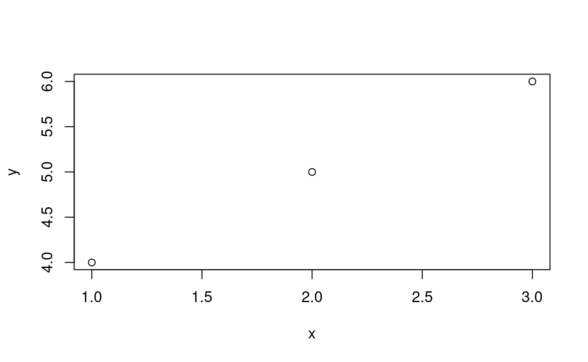

In this tutorial you’ll explore the RStudio interface and try out basic R functions. This will help you learn what R is and how it works to help prepare you for Lab 1.
Put very simply, you write code in the form of text commands and ask R to run it. Once it’s finished running, R gives you the output (answers) you’ve asked for. For example, to create an x,y plot of 1, 2, 3 and 4, 5, 6, you would run the following code:

For this exercise, you’ll write R code in the interactive Code boxes. You can ask R to run the code by pressing the Run Code or Submit Answer button. (Run Code simply runs the code; submit answer runs it and checks to see if it’s correct, so use this option when available.)
In a simple sense, R is just a very powerful calculator. For example, you can use it to add, subtract, multiply, and divide.
23472^3grade_code("That's right!")R also knows sin(), cos(), tan(), log10(), sqrt(), etc., along with some common variables like \(\pi\) (pi) and \(e\) exp(1).
You’ve just seen that R has the same functionality as a scientific calculator. But if that was all it could do there’d be no reason to use it. Let’s dig a little deeper into it’s capabilities.
One of the most basic features of R, or any programming language, is the ability to store items in memory. We typically say we assign them to a variable when we do this. The primary reason for doing this is to allow the variable to act as a placeholder for the calculated value in your code later on. For example, if you wanted to calculate the area of a circle and use it later, you might save it as the variable A. Let’s say the circle has a radius of 3 cm:
# A = pi x r^2
A <- pi*3^2Here, we’ve calculated the area of the circle using \(\pi r^2\) and saved it as a variable A using R’s assignment operator, <-. (This is the proper assignment operator, but you’ll find the equals sign, =, usually works the same.) We can now access the variable at any point later in our code. So if we wanted to calculate the volume of a cylinder that has that circle as the base, we could just call A. Let’s say the cylinder is 10 cm tall:
# V = Ah
V = A*10This time, we’ve calculated the volume with the stored value of A (the area of the base) and multiplied it by the height of the cylinder (10cm) to get the volume, which has been stored as V.
Note that R doesn’t automatically print the result to the screen, even though it stores in memory. To see the contents of V we type V into a prompt.
V and check to see that the volume seems correct:Vgrade_code("Does the volume seem correct?")When we save a variable in memory, it’s stored in our current R environment, sometimes called a workspace. The workspace will hold the variable until you close R or purposefully empty the workspace.
8 to the variable x and then display x:x <- 8
xgrade_code("That's correct!")Note that variables are case sensitive (along with everything else in R). That is, a isn’t the same as A! While you can use single letter for variable names, it’s good practice to provide meaningful names that help you and anyone reading your code know what each item is. For example, if you’re making a calibration curve, you might consider naming the \(x\)-data concentration instead of just x.
When you write R code, you use R functions that are built into the language. The function tells R what to do, and R won’t do anything without one. Typically, functions are represented as function_name(function_arguments). The arguments are options you specify that tell the function what to work on and/or how work. This is similar to the concept of an algebraic function, e.g. \(f(x)=2x\). Here, \(f\) is the function name and \(x\) is the argument. When we write \(f(4)\), we’re saying we wish to substitute \(4\) for \(x\), as in \(f(4) = 2 \times 4 = 8\). The same is true of functions in R. We might create a function timesTwo(x) that multiplies any x by 2, such that timesTwo(4) yields the result 8.
log10() to calculate the base-10 logarithm of 10 000.log10(10000)grade_code()This raises a question: Why can’t we use log()? To find out, type ?log() into the box below and examine the help file. The question mark syntax can be used to pull up the documentation for any R function. (If the formatting is messed up you can view the same documentation here: log())
There are many other functions in R. And if a function doesn’t exist you can actually write it yourself! We’ll explore more as the semester progresses.
Vectors are of central importance in R. A vector is just a 1-dimensional list of numbers (e.g. vector = [1, 3, 7, 3, 9]). These numbers can be arranged either in a single row (row vector, 1 x n) or a single column (column vector, n x 1). In R, vectors are assigned using the function c(). The c stands for “combine values into a vector”.
x and display the result on the screen.x <- c()
xgrade_result(
pass_if(~ identical(.result, c(4, 8, 3, 10, 12, 2)), "That's correct!"),
fail_if(~ TRUE, "Not quite. You may want to check the hint.")
)Although this vector contains 5 elements, there’s no reason a vector must contain multiple elements. In R, a scalar (single number) is represented by a 1-element vector. There’s also nothing stating a vector must contain numbers; it could also contain text (called a string in R).
Likewise, matrices are simply vectors that have been shaped into the appropriate dimensions. To create a matrix in R, you use matrix(vector, dimension) where vector is the vector of numbers you want to create the matrix from and dimension is specified as nrow=n (to define by rows) or ncol=n (to define by columns). For example M = matrix(c(1, 2, 3, 4), nrow=2) would create a matrix with 2 rows.
x you previously defined. Make sure it has 2 columns. Store it as X and display X on the screen.X <- matrix(x, ncol = 2)
Xgrade_code()Although this distinction of all matrices acting as vectors behind the scenes may seem trivial, it has dramatic implications for how R functions as a language that will be come apparent as you gain experience. Specifically, matrices are multiplied element-by-element and NOT using matrix math (linear algebra) unless explicitly specified. This is a unique characteristic of R compared to many languages.
X by X and view the result. Then add X %*% X or X %*% t(X) to use linear algebra rules instead and see what happens.A very important skill to have in R is the ability to filter, or subset, data. Say you have a vector, v, that’s 10 elements long, but you only want to use the second element in a calculation. You can use v[2] to extract just the second element. For example:
v <- 10:20
v## [1] 10 11 12 13 14 15 16 17 18 19 20v[2]## [1] 11Notice that the colon can be used to generate a sequence of numbers spaced by 1, which we used to create v (the numbers 10 through 20). (The 1 in brackets at the beginning of the line just specifies that you’re looking at the first row of output.) You can see that v[2] extracted the second element of the vector (11).
Of course, you can filter out multiple elements at once, as in v[2:5]. You can even use logical statements to automatically filter elements, such as v[v > 15].
v that are less than 14.v[v<14]grade_code()R has a very powerful data format called a data frame. These are data tables that are similar to Excel worksheets. Just like Excel sheets, they contain columns of data, and each column must be the same type. That is a column can contain numbers, text, factors, or even other data frames, but you cannot mix these types within a column. Note however that you can mix times within a single data frame. Most often, you’ll use data frames to work with the data you generate in lab. Data frames can be created with the data.frame() function.
Here’s a simple data frame showing a hypothetical sample of people, their height in centimeters, their age in years, and their favorite color:
# Assign Data Frame
people <- data.frame(
name = c("Geoff", "Austen", "Mike", "Sabrina"),
age = c(40, 32, 34, 27), # ages are in years
height = c(161, 157, 159, 161), # heights are in cm
fav_color = c("Blue", "Green", "Blue", "Purple")
)
# print to screen
peopleNote that each column in a data frame must be a vector. Columns are separated by commas. I’ve also used comments to specify things like units for each column. Comments are indicated by a #; anything after the mark doesn’t get read by R. These can be used anywhere in R and are useful for describing your code and indicating units, formulae, etc.
You can access the information in a data frame in several ways. First, you can filter it by number just like we did with vectors. We just use two values for indexing rather than one, as in name_of_df[row, column]. To see the first two rows of the second column in people, we’d type:
people[1:2, 2]## [1] 40 32If you want to see all rows (or columns) you just leave the row (or column) indicator empty. For instance, people[, 1] would display all rows in the first column.
people[2, ]grade_code()You can also subset data frames by column name using the $ operator. If you wanted to display all the heights, you’d type:
people$height## [1] 161 157 159 161Or, you could combine the two methods to display only certain rows:
people$height[3:4]## [1] 159 161Or, you could use the column header inside the brackets:
people['height', 3:4]people.people$fav_colorgrade_code()